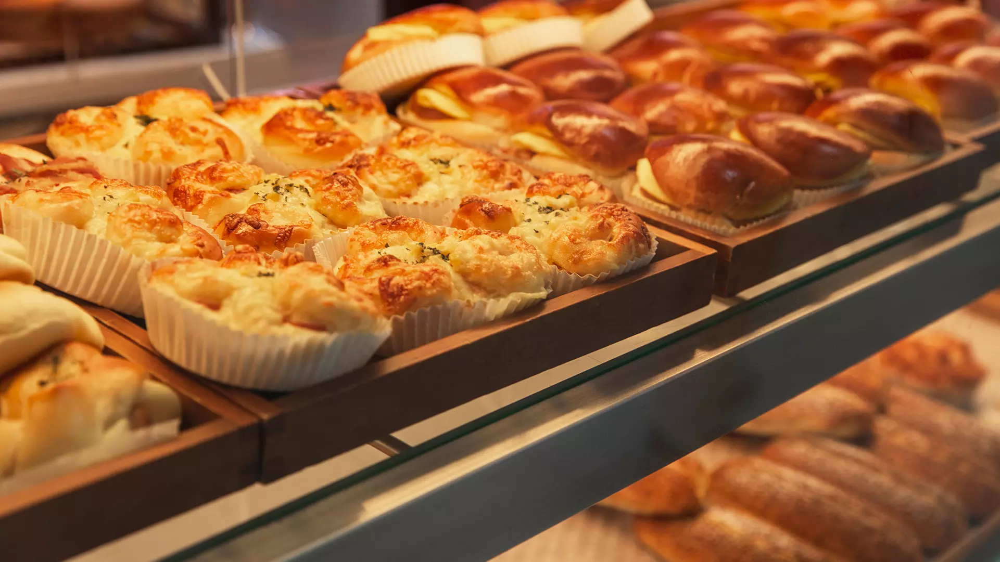

Estudantes da Universidade Positivo Reclamam de Qualidade dos Alimentos Servidos nos Refeitórios dos Blocos Vermelho e Azul

Os refeitórios dos blocos Vermelho e Azul da Universidade Positivo estão enfrentando críticas frequentes
dos alunos devido à qualidade dos alimentos servidos. Entre as principais reclamações, destacam-se os
salgados frios e os pratos de almoço que não chegam à temperatura adequada, gerando insatisfação e
preocupação com a segurança alimentar.
Alunos Reclamam da Temperatura dos Alimentos
Segundo relatos dos estudantes, os problemas ocorrem principalmente durante os horários de maior movimento, quando o fluxo de alunos aumenta e o serviço de alimentação parece não conseguir acompanhar a demanda. "Muitas vezes, quando vou comprar um salgado, ele está completamente frio por dentro, mesmo que tenha acabado de sair da estufa. Isso acontece com frequência tanto no bloco Vermelho quanto no Azul", comenta Beatriz Oliveira, aluna de Engenharia.As queixas não se limitam aos salgados. Os pratos de almoço também são alvo de críticas, especialmente os que deveriam ser servidos quentes, como massas, arroz, feijão, e acompanhamentos como carne e frango. "Já tive que devolver meu prato mais de uma vez porque estava frio. É frustrante pagar por uma refeição e receber algo que não está adequado para consumo", desabafa Lucas Pereira, estudante de Direito.
Problemas de Logística e Preocupações com a Saúde
Os estudantes acreditam que o problema pode estar relacionado à logística e à preparação dos alimentos. Em muitos casos, a comida parece ter sido preparada com antecedência e mantida em recipientes que não conseguem preservar a temperatura adequada. "A falta de cuidado com a conservação dos alimentos é preocupante. Comer comida fria não é apenas desagradável, mas também pode ser perigoso para a saúde", destaca Ana Paula Cunha, aluna de Nutrição.Além das críticas à temperatura, há também preocupações com a qualidade e frescor dos salgados. Muitos estudantes relataram que coxinhas, esfihas e pastéis têm um sabor que indica que foram feitos há muito tempo e apenas aquecidos rapidamente, o que não garante uma experiência satisfatória.
Resposta da Universidade e Medidas em Andamento
Após o aumento das reclamações, a administração da cantina e o setor de serviços alimentares da Universidade Positivo anunciaram que estão cientes dos problemas e já estão tomando medidas para melhorar a qualidade do serviço. Em nota, a gestão afirmou que irá revisar os processos de preparo e armazenamento dos alimentos, bem como reforçar o treinamento dos funcionários para garantir que os pratos sejam servidos na temperatura adequada."Ao receber as queixas dos alunos, iniciamos uma auditoria interna para identificar os pontos críticos. Queremos assegurar que todos os alimentos sejam servidos quentes e frescos, proporcionando uma boa experiência aos nossos estudantes", declarou a equipe de gestão dos refeitórios.
A Universidade Positivo reforça que os estudantes podem registrar suas reclamações diretamente no setor de Atendimento ao Aluno, e que todas as sugestões são bem-vindas para ajudar a aprimorar o serviço.